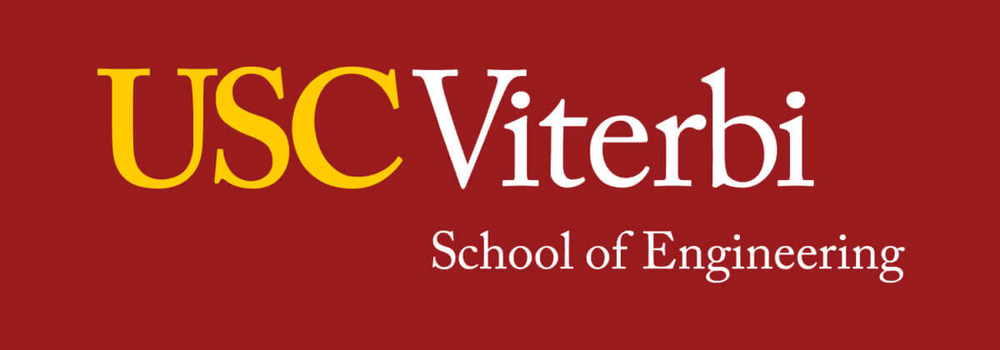

Ernst & Young
Cybersecurity Intern (Incident Response)
May - August 2024
I produced a comprehensive ransomware analysis and incident response for two major international clients. Using advanced forensic tools such as Axiom Magnet and X-Ways, I delivered detailed timelines and strategic recommendations directly to C-level executives, enhancing decision-making for risk mitigation. My investigation revealed that 32% of PII data was exposed in leaked documents; I implemented targeted data protection and encryption strategies that reduced potential data loss by 70%, safeguarding over 100,000 sensitive records.

I also had the privilege of leading a cybersecurity seminar and conducting a Rubber Ducky Payload demonstration as part of a comprehensive cybersecurity awareness program. This program was attended by over 110 employees and resulted in a 60% increase in awareness regarding potential compromise forms. The training emphasized real-world ransomware threats and incident response strategies, illustrating risks associated with physical security breaches and USB automation attacks. I tailored this program with industry-specific case studies and practical mitigation exercises, empowering employees with effective preventive measures and reinforced incident response techniques.
Ernst & Young
Cybersecurity Consulting Intern
May - August 2023
Developed over 20 advanced risk models using Alteryx and a custom Python-based Nmap compiler, significantly enhancing the precision of risk assessments and enabling clients to identify critical vulnerabilities more quickly and effectively.
Strengthened cybersecurity resilience by mitigating vulnerabilities across 15+ diverse environments, resulting in a substantial improvement in overall system security and robustness.
Participated in weekly client meetings to provide updates and better understand client needs. Leveraged Power BI for comprehensive data visualizations to communicate insights and progress, improving client understanding and engagement.
Teaching Assistant
Accelerated Programming in Python
USC Viterbi School of Engineering
Served as a Teaching Assistant for a class of over 150 students. Responsibilities included grading exams and midterms, holding office hours three times a week, and providing one-on-one review sessions to reinforce student understanding and clarify difficult topics.

The class covered essential concepts in data structures and algorithms, providing students with a strong foundation in programming fundamentals.